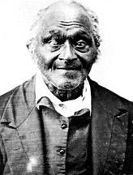
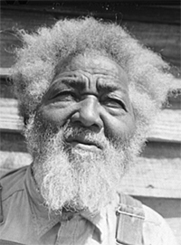

|
In the antebellum American South, where the life expectancy of slaves ranged
from the low thirties for males to the mid-thirties for females, few blacks
reached old age. In 1860 less than 10 percent of the slave population was over
fifty and only 3.5 percent was above age sixty. But those who did reach old age
faced a precarious existence in a production-based economic system. While
paternalism could be the reward for a slave's long and faithful service under
one master, many slaveholders linked work expectation to physical capacity
rather than chronology. They failed or refused to acknowledge the aging of their
bondsmen. Ultimately, the fate of most elderly slaves depended upon the
personality of the master and the financial exigencies of the plantation.
|

"Old Peter" was over 100 years old when he finally made his
escape from slavery.
|
Most slaveholders regarded the senescent slave as an economic liability, but
many found ways to maintain elderly slaves and keep costs to a minimum. For
example, to prevent the health care of a chronically ill slave from draining off
plantation funds, masters employed black healers. Slaves often preferred their
herbal prescriptions to the treatments of white doctors. AISO, the capitation or
head tax on slaves was eliminated at age fifty or sixty, thus relieving the
burden of maintaining old slaves. Even so, masters often pursued more drastic
means to offset or remove the economic liabilities of aged slaves. Masters
sometimes sold their slaves to unsuspecting buyers by dyeing or plucking out
gray strands of hair or falsifying documents. In some cases slave masters
isolated old slaves in out-of-the-way huts. Frederick Douglass recalled bitterly
the fate of his grandmother, given a hut in the woods and "made ... welcome to
the privilege of supporting herself there in perfect loneliness; thus virtually
turning her out to die." Such, charged Douglass, was the "base ingratitude and
fiendish barbarity" of the master class. In spite of laws designed to protect
white society from pauperized slaves, masters freed senescent slaves to beg
morsels of food from neighbors, to spend their last days in the poorhouses, or
to become public charges. In spite of the planters' proslavery argument, few
elderly slaves were "retired" or maintained as pensioners at the master's
expense.
Notwithstanding the variations of slave treatment, slavery was primarily an
economic system that valued slaves, young as well as old, in accordance with
their economic worth and productivity. The usefulness of slaves could be
maintained into old age because the agricultural unit was well-suited for a
myriad of abilities and strengths. Useful employment meant not only
intrinsically profitable tasks, but also the performance of jobs that freed the
more robust to perform duties that were more physically demanding. The jobs of
old men included watering and feeding animals, hunting game, shucking corn,
sharpening, polishing and repairing tools, and gardening. Elderly women cooked
food, cleaned houses, attended the sick, cared for plantation children, sewed,
and knitted. Although these gender distinctions generally prevailed, the parity
of strength in old age rendered few jobs the exclusive province of a particular
sex. And both sexes continued to be utilized by the plantation economy in their
later years.
The care and status of old or superannuated slaves did not rest entirely on the
attitude and treatment of individual owners. Within the slave community the
elderly held a special position and filled diverse roles. It was here that the
old found care, respect, and a "place" to live as well as the opportunity to
practice religious tenets that sustained them in their belief in the hereafter.
According to Eugene D. Genovese: "The slaves themselves did everything possible
to allow their old people to end their lives with dignity."
|

Freed from slavery as a young man, Tony Thompson
lived to be ninety years old. Quite a few ex-slaves lived to old
ages, which suggests that the poor conditions of slavery
contributed substantially to their lower life spans.
|
Reverence for the old harked back to the West African tradition, survived the
trauma of enslavement, and persisted in relationships between young and old
slaves. The elderly slave generally was respected for his age, wisdom, and
rarity, as well as for the performance of valuable functions similar to those
performed by senior members of West African communities. Elderly slaves
socialized children, acted as intermediaries between parents and children,
advised on religious matters and love affairs, served as doctors-midwives, told
stories of Africa and America that linked past and present, and served as
conduits of the cultural heritage. Consonant with West African tradition,
grandparents frequently named slave children, particularly boys, after
ancestors--a practice that gave continuity to families in a society where family
separation was a likely occurrence.
Thus it was in the slave community that the old and superannuated found dignity,
respect, and usefulness. Paradoxically, old age earned the slave respect in the
quarters at the very time that its accompanying infirmities jeopardized his
existence in an economic system that valued only his productive capacity. This
dynamic contributed in no small measure to the ambivalence and anxiety
characteristic of the aging process.
Source: Randall M. Miller and John David Smith, eds. Dictionary of
Afro-American Slavery (Westport, CT: Praeger, 1997), 213-14.
|